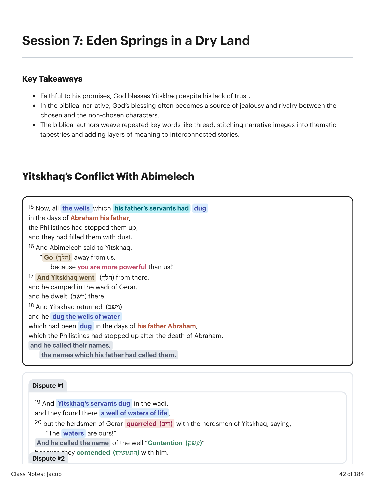
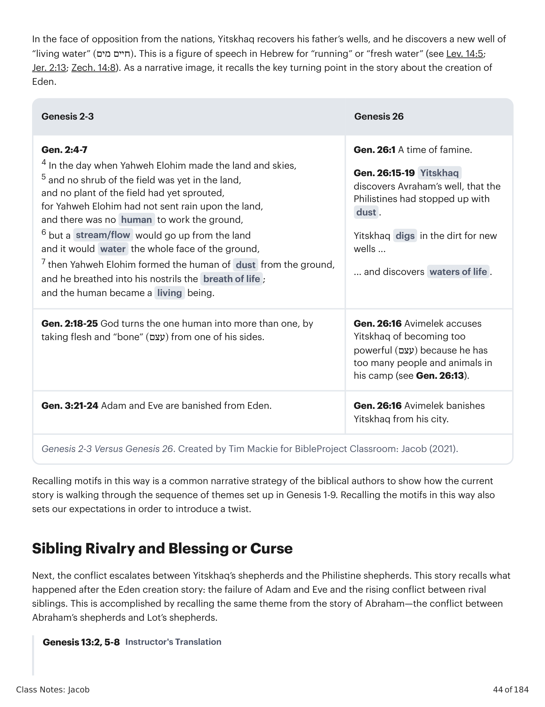
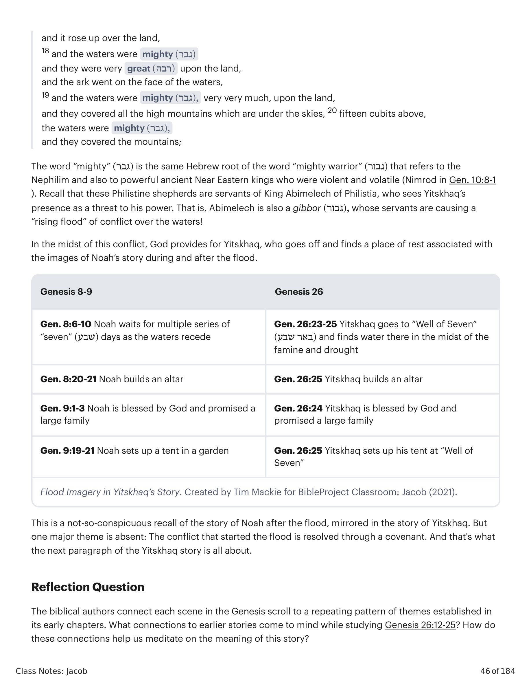

15 Ora, todos os poços que os servos de seu pai tinham cavado nos dias de Abraão, seu pai, os filisteus os tinham entupido e os tinham enchido de pó. 16 E Abimeleque disse a Yitskhaq: "Vai (הלך) para longe de nós, porque és mais poderoso do que nós!" 17 E Yitskhaq foi (הלך) dali, e acampou no vale de Gerar, e habitou (וישב) ali. 18 E Yitskhaq voltou (וישב) e cavou os poços de água que tinham sido cavados nos dias de seu pai Abraão, os quais os filisteus tinham entupido após a morte de Abraão, e chamou-lhes os nomes que seu pai lhes chamara. 19 E os servos de Yitskhaq cavaram no vale, e acharam ali um poço de águas de vida, 20 mas os pastores de Gerar contenderam (ריב) com os pastores de Yitskhaq, dizendo: "As águas são nossas!" E ele chamou o nome do poço "Contenda (עשק)," porque contenderem (התעשקו) com ele. 21 E cavaram outro poço, e também contenderam (ריב) sobre ele, e ele chamou seu nome "Oposição (שטנה)." 22 E ele se afastou dali e cavou outro poço. E não contenderam (ריב) sobre ele; e chamou seu nome "Lugares Amplos (רחבות)," e disse: "Porque agora Yahweh tem ampliado um lugar (הרחיב) para nós, e seremos frutíferos (פרינו) na terra."15 Now, all the wells which his father's servants had dug in the days of Abraham his father, the Philistines had stopped them up, and they had filled them with dust. 16 And Abimelech said to Yitskhaq, "Go (הלך) away from us, because you are more powerful than us!" 17 And Yitskhaq went (הלך) from there, and he camped in the wadi of Gerar, and he dwelt (וישב) there. 18 And Yitskhaq returned (וישב) and he dug the wells of water which had been dug in the days of his father Abraham, which the Philistines had stopped up after the death of Abraham, and he called their names, the names which his father had called them. 19 And Yitskhaq's servants dug in the wadi, and they found there a well of waters of life, 20 but the herdsmen of Gerar quarreled (ריב) with the herdsmen of Yitskhaq, saying, "The waters are ours!" And he called the name of the well "Contention (עשק)" because they contended (התעשקו) with him. 21 And they dug another well, and they also quarreled (ריב) over it, and he called its name "Opposition (שטנה)." 22 And he moved away from there and he dug another well. And they did not quarrel (ריב) over it; and he called its name "Wide-places (רחבות)," and he said, "Because now Yahweh has widened a place (הרחיב) for us, and we will be fruitful (פרינו) in the land."

Gênesis 26:15-25. Tradução e Design Literário por Tim Mackie para BibleProject Classroom: Jacó (2021).Genesis 26:15-25. Translation and Literary Design by Tim Mackie for BibleProject Classroom: Jacob (2021).
Esta história é sobre a provisão milagrosa de Deus de água da terra para Yitskhaq frente a dois grandes obstáculos: (1) é um tempo de fome (Gn 26:1), que pressupõe uma seca, e (2) as nações estão em conflito com o escolhido de Deus através de uma série de conflitos crescentes sobre acesso à água. Após descermos dos altos da bênção de Deus em Gênesis 26:1-5 (que recorda a bênção de criação de Gênesis 1), agora entramos nos desertos áridos de uma terra de fome. Mas no meio do deserto, Yitskhaq redescobre algo que os filisteus tentaram impedir: acesso a água fresca de nascente.This story is about God's miraculous provision of water from the ground for Yitskhaq in the face of two major obstacles: (1) It's a time of famine (Gen. 26:1), which presumes a drought, and (2) the nations are at odds with God's chosen one through a series of escalating conflicts about access to water. After we descend from the heights of God's blessing in Genesis 26:1-5 (which recalls the creation blessing of Genesis 1), we now enter the barren deserts of a famine land. But in the middle of the desert, Yitskhaq rediscovers something that the Philistines attempted to stop: access to fresh spring water.
Diante da oposição das nações, Yitskhaq recupera os poços de seu pai e descobre um novo poço de "águas vivas" (חיים מים) — uma figura de linguagem em hebraico para "água corrente" ou "água fresca" (veja Lv 14:5; Jr 2:13; Zc 14:8). Como imagem narrativa, recorda o momento-chave na história da criação do Éden.In the face of opposition from the nations, Yitskhaq recovers his father's wells, and he discovers a new well of "living water" (חיים מים). This is a figure of speech in Hebrew for "running" or "fresh water" (see Lev. 14:5; Jer. 2:13; Zech. 14:8). As a narrative image, it recalls the key turning point in the story about the creation of Eden.

Gênesis 2-3 versus Gênesis 26. Criado por Tim Mackie para BibleProject Classroom: Jacó (2021).Genesis 2-3 Versus Genesis 26. Created by Tim Mackie for BibleProject Classroom: Jacob (2021).
O segundo poço disputado é chamado Sitnah, isto é, "lugar de Satanás" (שטנה). É um uso do substantivo "satan" em seu sentido literal, "oposição". E embora no nível narrativo descreva simplesmente o conflito entre tribos rivais, também recorda a importante analogia entre o pecado em Gênesis 4:7 e a serpente em Gênesis 3.The second disputed well is named Sitnah, that is, "Satan-place" (שטנה). It's a use of the noun "satan" in its literal sense, "opposition." And while on the narrative level it simply describes the conflict between rival tribes, it also recalls the important analogy between sin in Genesis 4:7 and the snake in Genesis 3.
No meio deste conflito, Deus provê para Yitskhaq, que parte e encontra um lugar de descanso associado às imagens da história de Noé durante e após o dilúvio. Um tema importante está ausente: o conflito que iniciou o dilúvio é resolvido através de uma aliança. E é disso que o próximo parágrafo da história de Yitskhaq trata.In the midst of this conflict, God provides for Yitskhaq, who goes off and finds a place of rest associated with the images of Noah's story during and after the flood. One major theme is absent: The conflict that started the flood is resolved through a covenant. And that's what the next paragraph of the Yitskhaq story is all about.

Imagens de Dilúvio na História de Yitskhaq. Criado por Tim Mackie para BibleProject Classroom: Jacó (2021).Flood Imagery in Yitskhaq's Story. Created by Tim Mackie for BibleProject Classroom: Jacob (2021).
Os autores bíblicos conectam cada cena do rolo de Gênesis a um padrão repetido de temas estabelecidos em seus primeiros capítulos. Que conexões com histórias anteriores vêm à mente ao estudar Gênesis 26:12-25? Como essas conexões nos ajudam a meditar sobre o significado desta história?The biblical authors connect each scene in the Genesis scroll to a repeating pattern of themes established in its early chapters. What connections to earlier stories come to mind while studying Genesis 26:12-25? How do these connections help us meditate on the meaning of this story?